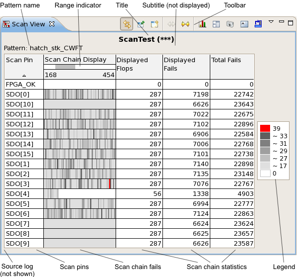
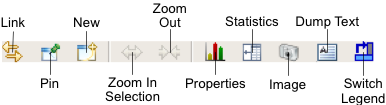

Scan view
The scan view graphically displays an overview of the results of scan chain tests.
A scan view is opened by choosing from the shortcut menu of a Test summary tab when a test suite with the type Scan is selected. It can also be opened using the New button (see below) from the toolbar of another scan view chart or using the menu command.

These are the elements in the main area of the chart (for the toolbar and shortcut menu, see below):
- Title: By default, the name of the test being displayed and its number in parentheses.
- Subtitle: By default, the subtitle is empty, unless the test summary page is grouped by pins, wafers, or sites. You can edit this label in the chart properties.
- Toolbar: The action buttons of the chart. See the Toolbar section, below, for details.
- Pattern name: The name of the test pattern used to produce the scan test results.
- Range indicator: When the display is zoomed in, the gray region indicates location of the displayed subset of the scan chains in relation to the chain length. The first and last cells of the displayed area are also shown numerically.
- Source log: If a scan view displays result from multiple source logs (for example, from a correlated data store), an additional column is shown at the very left that contains the names of the source logs of the data displayed in each column.
- Scan pins: The pins that have been tested.
- Scan chain fails: A visual display of the frequency of scan chain failures in each
location.
The scan chain cell with the most fails in the displayed area is colored red. Cells with fewer fails are colored in shades of gray (the more fails, the darker the gray). White cells did not have any fails.
- Scan chain statistics: The length of the scan chain (number of flops), the total number of fails in the entire chain, and the number of fails in the displayed section of the chain.
- Legend: A description of the colors used. The legend notes for each color the number of fails that it indicates.
You can zoom in on a portion of the chart by clicking it to the left of the first column you want to see and drag the mouse to the right of the last column you want to see in the zoomed area.
Toolbar

The toolbar of a scan view includes these buttons:
- Link: Links the display in the view to the selected row in the data navigation view.
In this mode, if the selection in the data navigation view changes, the display updates automatically.
- Pin: Freezes the display in the view.
In this mode, the view keeps displaying the rows it currently displays, even when the selection in the data navigation view changes. Dynamic updating can be resumed by clicking the Link button.
- New: Creates a new trend chart view.
- Zoom In Selection: Fills the graph with the selected cells.
Note that selecting a range of columns by click-and drag (instead by shift-clicking) automatically zooms in on these columns.
- Zoom Out: Reverses the most recent zooming in.
- Properties: Opens the Scan view properties
dialog.
Statistics: Displays the data that underly the graph. The information categories are the same as the columns in test summary tabs. Clicking the button again hides the values and displays the chart.
- Image: Clicking this buttons lets you save the current chart display as a PNG or JPEG image.
- Dump Text: Outputs a numerical overview of the displayed section of the scan chains to the
console.
Clicking the button lists all displayed scan chains. For each chain, the output includes the number of fails in the five most-failing cells in the display area, the chain length, the total number of fails in the display area, and the total number of fails in the entire chain.
- Switch Legend: Switches the position of the legend between the bottom and the right side of the chart.
Shortcut menu
The shortcut menu of a Scan view contains these commands:
- Zoom In Selection: Enlarges the selected cells so that they fill the
display area.
Note that selecting a range of columns by click-and drag (instead by shift-clicking) automatically zooms in on these columns.
- Zoom Out: Returns to the previous larger zoom (reversing the most recent zooming in).
- Restore Defaults: Resets the zoom level to the default.
- Group by Instance: Displays each individual scan instance.
This command is available only if the view displays a pattern‑based scan test (as opposed to a cycle-based test).
- Properties: Opens the Scan view properties dialog.
Functional changes
- Introduced in SmarTest 7.2.2
- SmarTest 7.3.2: Added Group by Instance shortcut menu command.